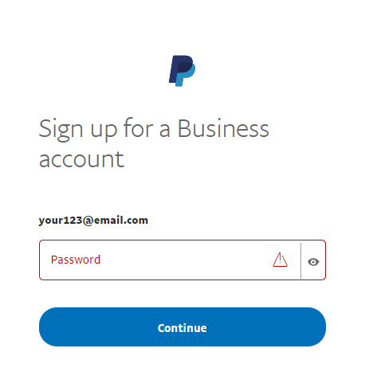
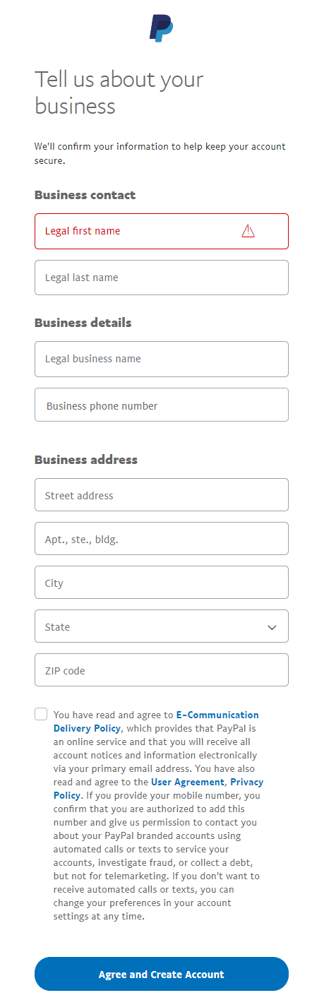
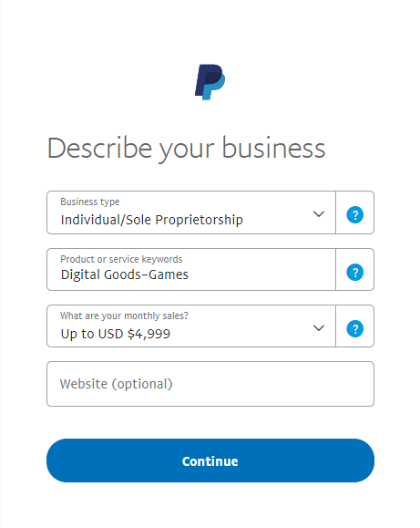

PayPal Standard
Important
This plugin is currently deprecated and, starting from version 4.60, has been replaced by the PayPal Zettle plugin.
PayPal Standard is the easiest way to securely accept credit card and PayPal payments online.
To configure the PayPal Standard plugin, go to Configuration → Payment methods. Then find the PayPal Standard payment method in the payment method list:
Activate the method, edit its name, and display order
You can edit the payment method name, which will be displayed for customers in the public store, or its display order. To do this, click the Edit button in the plugin row on the payment method list page. You will be able to enter Friendly name and Display order. In this row, you can also activate the plugin or make it inactive using the Is active field. Click the Update button. Your changes will be saved.
Configure the payment method
To use the PayPal Standard plugin as a payment method, please follow these steps:
Register a Business account on www.paypal.com. Follow the link https://www.paypal.com/bizsignup/. Then fill in the information about yourself and your business:

Note
If you already have an account, you will be redirected to the authorization.




In the top navigation bar, click the Settings icon
Select Website payments in the left panel and click Update in the Website preferences line.
In the Auto return for website payments section, set the switch to On. As the Return URL, enter the URL of your site, which will receive ID transactions sent by PayPal after customer payment. In our case, it's
http://localhost:15536/Plugins/PaymentPayPalStandard/PDTHandlerbut don't forget to replace localhost with your site URL.In the Payment data transfer section, set the switch to On and copy Identity Token.
To configure the plugin in the admin panel of nopCommerce, go to Configuration → Payment methods. In the PayPal Standard line, click Configure.
In the Business Email field, enter the email specified when registering a Business account on paypal.com.
In the PDT Identity Token field, enter the copied Identity Token from clause #5.
Click Save.
For the IPN (Instant Payment Notification) activation:
Select Notifications in the left panel and click the Update in the Instant payment notifications line.
Familiarize yourself with the information regarding IPN and click Choose IPN Settings.
Select Receive IPN messages (Enabled). As Notification URL, enter the URL of your IPN handler.
Click Save. You should get a message that you have successfully activated IPN.
Note
Instant Payment Notification (IPN) is a PayPal message service that sends a notification when a transaction is affected. Once IPN is integrated, sellers can automate their back office so that they don't have to wait for payments to come in to trigger the order fulfillment.
Limit to stores and customer roles
You can limit any payment method to store and customer role. This means that the method will be available to certain stores or customer roles only. You can do this from the plugin list page.
Go to Configuration → Local plugins. Find the plugin you want to limit. In our case, it's PayPal Standard. To find it faster, use the Search panel at the top of the page and search by Plugin name or Group using the Payment methods option.

Click the Edit button, and the Edit plugin details window will be displayed as follows:
You can set up the following limits:
In the Limited to customer roles field, choose one or several customer roles, that is, administrators, vendors, guests, who will be able to use this plugin. If you don't need this option just leave this field empty.
Important
In order to use this functionality, you have to disable the following setting: Catalog settings → Ignore ACL rules (sitewide). Read more about the access control list here.
Use the Limited to stores option to limit this plugin to a certain store. If you have multiple stores, choose one or several from the list. If you don't use this option, just leave this field empty.
Important
In order to use this functionality, you have to disable the following setting: Catalog settings → Ignore "limit per store" rules (sitewide). Read more about multi-store functionality here.
Click Save.
Known Issues
Error: Things don't appear to be working at the moment (PayPal)
If you see the error "Things don't appear to be working at the moment. Please try again later"
The error is caused by a setting within your PayPal Account.
Step 1: On the left sidebar, under "Products & Services," click "Website Payments"
Step 2: Click "Update" next to the "Website Preferences" section
Step 3: Scroll down to the "Encrypted Website Payments" section, select "Off" on the right, and then save your changes.
After saving the change, you can go back to your site and try the button/forms again, and they should work.